<!DOCTYPE html>
<html>
<head><meta name="generator" content="Hexo 3.8.0">
  <meta charset="utf-8">
  
  <title>Web攻防之暴力破解(何足道版) | sm0nk&#39;s blog</title>

  <!-- keywords -->
  

  <meta name="viewport" content="width=device-width, initial-scale=1, maximum-scale=1">
  <meta name="description" content="原创文章，转载请注明出处。 0x00 序&amp;nbsp;&amp;nbsp;&amp;nbsp;&amp;nbsp;攻防之初，大多为绕过既有逻辑和认证，以Getshell为节点，不管是SQL注入获得管理员数据还是XSS 获得后台cookie，大多数是为了后台的登录权限，假若我们获得一枚口令，都是柳暗花明。不管口令复杂与否，只要在构造的字典内都是爆破之结晶。&amp;nbsp;&amp;nbsp;&amp;nbsp;&amp;nbsp;Web形态及业务之错综">
<meta name="keywords" content="爆破">
<meta property="og:type" content="article">
<meta property="og:title" content="Web攻防之暴力破解(何足道版)">
<meta property="og:url" content="http://yoursite.com/2017/12/04/Web攻防之暴力破解-何足道版/index.html">
<meta property="og:site_name" content="sm0nk&#39;s blog">
<meta property="og:description" content="原创文章，转载请注明出处。 0x00 序&amp;nbsp;&amp;nbsp;&amp;nbsp;&amp;nbsp;攻防之初，大多为绕过既有逻辑和认证，以Getshell为节点，不管是SQL注入获得管理员数据还是XSS 获得后台cookie，大多数是为了后台的登录权限，假若我们获得一枚口令，都是柳暗花明。不管口令复杂与否，只要在构造的字典内都是爆破之结晶。&amp;nbsp;&amp;nbsp;&amp;nbsp;&amp;nbsp;Web形态及业务之错综">
<meta property="og:locale" content="default">
<meta property="og:image" content="http://yoursite.com/2017/12/04/Web攻防之暴力破解-何足道版/zonglan.png">
<meta property="og:image" content="http://yoursite.com/2017/12/04/Web攻防之暴力破解-何足道版/1pydirtor.png">
<meta property="og:image" content="http://yoursite.com/2017/12/04/Web攻防之暴力破解-何足道版/2burp.png">
<meta property="og:image" content="http://yoursite.com/2017/12/04/Web攻防之暴力破解-何足道版/3pwd.png">
<meta property="og:image" content="http://yoursite.com/2017/12/04/Web攻防之暴力破解-何足道版/4genpwd.png">
<meta property="og:image" content="http://yoursite.com/2017/12/04/Web攻防之暴力破解-何足道版/5BurpBase64.png">
<meta property="og:image" content="http://yoursite.com/2017/12/04/Web攻防之暴力破解-何足道版/6seleinum.png">
<meta property="og:image" content="http://yoursite.com/2017/12/04/Web攻防之暴力破解-何足道版/7donghua.gif">
<meta property="og:image" content="http://yoursite.com/2017/12/04/Web攻防之暴力破解-何足道版/8xiaomifan.png">
<meta property="og:image" content="http://yoursite.com/2017/12/04/Web攻防之暴力破解-何足道版/9pyAuto.png">
<meta property="og:image" content="http://yoursite.com/2017/12/04/Web攻防之暴力破解-何足道版/10dirscan.png">
<meta property="og:image" content="http://yoursite.com/2017/12/04/Web攻防之暴力破解-何足道版/11modsecurity.png">
<meta property="og:image" content="http://yoursite.com/2017/12/04/Web攻防之暴力破解-何足道版/12yanzhengma.png">
<meta property="og:updated_time" content="2021-07-27T07:55:25.641Z">
<meta name="twitter:card" content="summary">
<meta name="twitter:title" content="Web攻防之暴力破解(何足道版)">
<meta name="twitter:description" content="原创文章，转载请注明出处。 0x00 序&amp;nbsp;&amp;nbsp;&amp;nbsp;&amp;nbsp;攻防之初，大多为绕过既有逻辑和认证，以Getshell为节点，不管是SQL注入获得管理员数据还是XSS 获得后台cookie，大多数是为了后台的登录权限，假若我们获得一枚口令，都是柳暗花明。不管口令复杂与否，只要在构造的字典内都是爆破之结晶。&amp;nbsp;&amp;nbsp;&amp;nbsp;&amp;nbsp;Web形态及业务之错综">
<meta name="twitter:image" content="http://yoursite.com/2017/12/04/Web攻防之暴力破解-何足道版/zonglan.png">
  
    <link rel="alternative" href="/atom.xml" title="sm0nk&#39;s blog" type="application/atom+xml">
  
  
    <link rel="icon" href="http://p6.sinaimg.cn/3607464725/180/71341468803657">
  
  <link rel="stylesheet" href="/css/style.css">
  
  

  <script src="//cdn.bootcss.com/require.js/2.3.2/require.min.js"></script>
  <script src="//cdn.bootcss.com/jquery/3.1.1/jquery.min.js"></script>

  
</head></html>
<body>
  <div id="container">
    <div id="particles-js"></div>
    <div class="left-col">
    <div class="overlay"></div>
<div class="intrude-less">
	<header id="header" class="inner">
		<a href="/" class="profilepic">
			
			
			
		</a>

		<hgroup>
		  <h1 class="header-author"><a href="/">sm0nk</a></h1>
		</hgroup>

		

		
			<div class="switch-btn">
				<div class="icon">
					<div class="icon-ctn">
						<div class="icon-wrap icon-house" data-idx="0">
							<div class="birdhouse"></div>
							<div class="birdhouse_holes"></div>
						</div>
						<div class="icon-wrap icon-ribbon hide" data-idx="1">
							<div class="ribbon"></div>
						</div>
						
						
					</div>
					
				</div>
				<div class="tips-box hide">
					<div class="tips-arrow"></div>
					<ul class="tips-inner">
						<li>菜单</li>
						<li>标签</li>
						
						
					</ul>
				</div>
			</div>
		

		<div class="switch-area">
			<div class="switch-wrap">
				<section class="switch-part switch-part1">
					<nav class="header-menu">
						<ul>
						
							<li><a href="/categories/攻防渗透/">攻防渗透</a></li>
				        
							<li><a href="/categories/编程之道/">编程之道</a></li>
				        
							<li><a href="/categories/归纳总结/">归纳总结</a></li>
				        
							<li><a href="/categories/认知独省/">认知独省</a></li>
				        
						</ul>
					</nav>
					<nav class="header-nav">
						<div class="social">
							
								<a class="mail" target="_blank" href="mailto:sm0nk@qq.com" title="mail">mail</a>
					        
								<a class="weibo" target="_blank" href="http://weibo.com/shellr00t" title="weibo">weibo</a>
					        
						</div>
					</nav>
				</section>
				
				
				<section class="switch-part switch-part2">
					<div class="widget tagcloud" id="js-tagcloud">
						<a href="/tags/CTF/" style="font-size: 10px;">CTF</a> <a href="/tags/SQL注入/" style="font-size: 10px;">SQL注入</a> <a href="/tags/blog/" style="font-size: 10px;">blog</a> <a href="/tags/pentest/" style="font-size: 10px;">pentest</a> <a href="/tags/python/" style="font-size: 20px;">python</a> <a href="/tags/seleinum/" style="font-size: 10px;">seleinum</a> <a href="/tags/struts2/" style="font-size: 10px;">struts2</a> <a href="/tags/业务逻辑/" style="font-size: 10px;">业务逻辑</a> <a href="/tags/代理转发/" style="font-size: 10px;">代理转发</a> <a href="/tags/创新/" style="font-size: 10px;">创新</a> <a href="/tags/工控安全/" style="font-size: 10px;">工控安全</a> <a href="/tags/应急/" style="font-size: 20px;">应急</a> <a href="/tags/接口安全/" style="font-size: 10px;">接口安全</a> <a href="/tags/渗透/" style="font-size: 10px;">渗透</a> <a href="/tags/爆破/" style="font-size: 10px;">爆破</a> <a href="/tags/语言安全/" style="font-size: 10px;">语言安全</a> <a href="/tags/远程下载/" style="font-size: 10px;">远程下载</a>
					</div>
				</section>
				
				
				

				
			</div>
		</div>
	</header>				
</div>
    </div>
    <div class="mid-col">
      <nav id="mobile-nav">
  	<div class="overlay">
  		<div class="slider-trigger"></div>
  		<h1 class="header-author js-mobile-header hide">sm0nk</h1>
  	</div>
	<div class="intrude-less">
		<header id="header" class="inner">
			<div class="profilepic">
				
			</div>
			<hgroup>
			  <h1 class="header-author">sm0nk</h1>
			</hgroup>
			
			<nav class="header-menu">
				<ul>
				
					<li><a href="/categories/攻防渗透/">攻防渗透</a></li>
		        
					<li><a href="/categories/编程之道/">编程之道</a></li>
		        
					<li><a href="/categories/归纳总结/">归纳总结</a></li>
		        
					<li><a href="/categories/认知独省/">认知独省</a></li>
		        
		        <div class="clearfix"></div>
				</ul>
			</nav>
			<nav class="header-nav">
				<div class="social">
					
						<a class="mail" target="_blank" href="mailto:sm0nk@qq.com" title="mail">mail</a>
			        
						<a class="weibo" target="_blank" href="http://weibo.com/shellr00t" title="weibo">weibo</a>
			        
				</div>
			</nav>
		</header>				
	</div>
</nav>
      <div class="body-wrap"><article id="post-Web攻防之暴力破解-何足道版" class="article article-type-post" itemscope itemprop="blogPost">
  
    <div class="article-meta">
      <a href="/2017/12/04/Web攻防之暴力破解-何足道版/" class="article-date">
  	<time datetime="2017-12-04T06:46:19.000Z" itemprop="datePublished">2017-12-04</time>
</a>
    </div>
  
  <div class="article-inner">
    
      <input type="hidden" class="isFancy">
    
    
      <header class="article-header">
        
  
    <h1 class="article-title" itemprop="name">
      Web攻防之暴力破解(何足道版)
      
    </h1>
  

      </header>
      
      <div class="article-info article-info-post">
        
	<div class="article-tag tagcloud">
		<ul class="article-tag-list"><li class="article-tag-list-item"><a class="article-tag-list-link" href="/tags/爆破/">爆破</a></li></ul>
	</div>

        
	<div class="article-category tagcloud">
	<a class="article-category-link" href="/categories/归纳总结-攻防渗透/">归纳总结,攻防渗透</a>
	</div>


        
        <div class="clearfix"></div>
      </div>
      
    
    <div class="article-entry" itemprop="articleBody">
      
        <p>原创文章，转载请注明出处。</p>
<h1><span id="0x00-序">0x00 序</span></h1><p>&nbsp;&nbsp;&nbsp;&nbsp;攻防之初，大多为绕过既有逻辑和认证，以Getshell为节点，不管是SQL注入获得管理员数据还是XSS 获得后台cookie，大多数是为了后台的登录权限，假若我们获得一枚口令，都是柳暗花明。不管口令复杂与否，只要在构造的字典内都是爆破之结晶。<br>&nbsp;&nbsp;&nbsp;&nbsp;Web形态及业务之错综，我们暂可将能够自定义字典的请求归类到爆破，以便信息的提炼和知识的逻辑推理。<br>&nbsp;&nbsp;&nbsp;&nbsp;本文主要收集了常用的一些爆破相关的零碎点和技巧点。<br><a id="more"></a><br>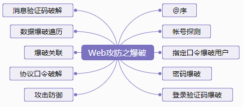</p>
<!-- toc -->
<ul>
<li><a href="#0x01-账户探测">0x01 账户探测</a></li>
<li><a href="#0x02-指定口令爆破用户名">0x02 指定口令爆破用户名</a></li>
<li><a href="#0x03-密码爆破">0x03 密码爆破</a></li>
<li><a href="#0x04-登录验证码爆破">0x04 登录验证码爆破</a></li>
<li><a href="#0x05-短信邮箱验证码爆破">0x05 短信/邮箱验证码爆破</a></li>
<li><a href="#0x06-数据信息爆破遍历">0x06 数据信息爆破（遍历）</a></li>
<li><a href="#0x07-爆破关联">0x07 爆破关联</a></li>
<li><a href="#0x08-协议口令爆破">0x08 协议口令爆破</a></li>
<li><a href="#0x09-攻击防御">0x09 攻击防御</a></li>
</ul>
<!-- tocstop -->
<h1><span id="0x01-账户探测">0x01 账户探测</span></h1><ol>
<li>探测存在与否</li>
<li>第一梯队：Top500用户名、手机号</li>
<li>第二梯队：邮箱、员工编号</li>
</ol>
<h1><span id="0x02-指定口令爆破用户名">0x02 指定口令爆破用户名</span></h1><ol>
<li>指定类123456口令爆破用户名</li>
<li>正常的top500，top10000帐号；</li>
<li><p>单个字母、两个字母、三个字母、四个字母随机组合的帐号；<br>a)    小工具pydictor值得推荐<br>python pydictor.py -base L –len 2  3<br>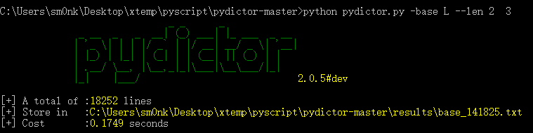<br>b)    Burp也可以<br>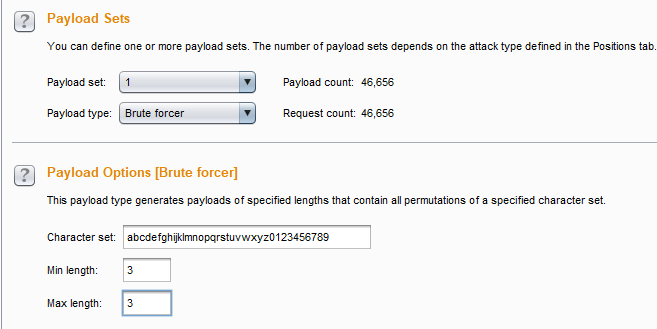<br>c)    一位数字、二位数字、三位数字、四位数字的随机组合</p>
<figure class="highlight python"><table><tr><td class="gutter"><pre><span class="line">1</span><br><span class="line">2</span><br></pre></td><td class="code"><pre><span class="line"><span class="keyword">for</span> n <span class="keyword">in</span> xrange(<span class="number">10000</span>):</span><br><span class="line">   <span class="keyword">print</span> str(n).zfill(<span class="number">4</span>)</span><br></pre></td></tr></table></figure>
</li>
<li><p>厂商名相关帐号，<br>a)    如：facebook、fb_steven …<br>b)    页面联系邮箱的规则学习及自创建</p>
</li>
</ol>
<h1><span id="0x03-密码爆破">0x03 密码爆破</span></h1><ol>
<li>top500, top3000,top10000，自定义密码<br>a)    Top 系列，几乎安全从业都有自己的弱口令字典，常规就好，太大的字典跑起来也费劲，关键是定制<br>b)    定制字典，pydictor值得推荐：<a href="https://github.com/LandGrey/pydictor" target="_blank" rel="noopener">https://github.com/LandGrey/pydictor</a><br>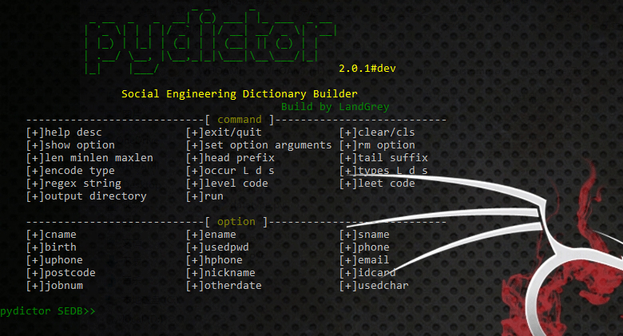<br>c)    社工库的使用，指定用户的历史密码，是一种尝试</li>
<li>厂商特色口令生成，如baidu@123<br>a)    适用于应用管理员类人员以及主机协议类密码<br>b)    更多定制类字典也可以pydicor<br>c)    <a href="http://www.cnblogs.com/shellr00t/p/5316401.html" target="_blank" rel="noopener">http://www.cnblogs.com/shellr00t/p/5316401.html</a><br>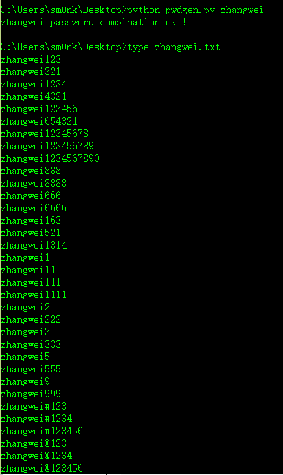</li>
<li>加密密码暴力破解<br>a)    普通编码类，如base64<br>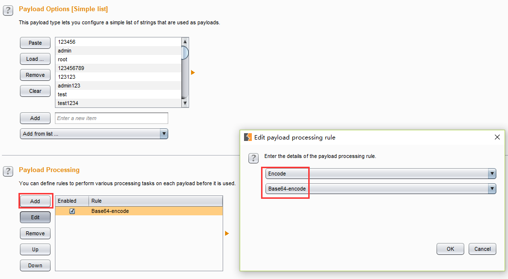<br>b)    自定义加密算法（目标系统使用了可猜测的加密算法去加密口令）<br>可参考浮萍写的基于RSA算法加密口令后爆破脚本：<br><a href="https://github.com/fupinglee/MyPython/blob/master/web/RSADemo.py" target="_blank" rel="noopener">https://github.com/fupinglee/MyPython/blob/master/web/RSADemo.py</a><br>c)    Selenium 自动浏览器提交模块（可适用与不明加密算法，模拟正常操作流）<br>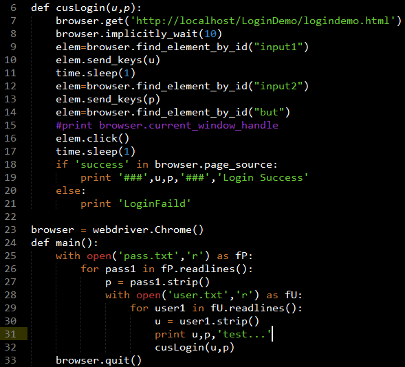<br>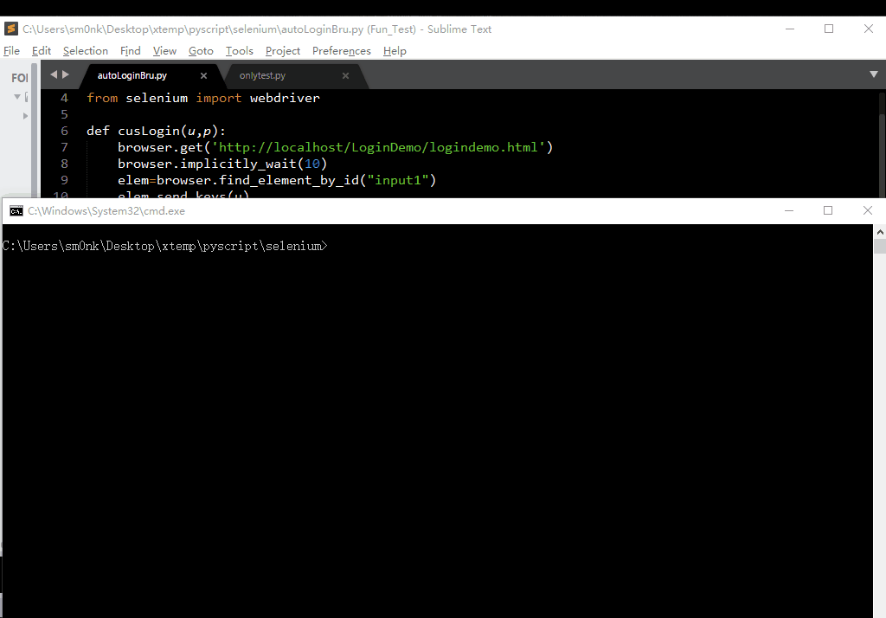<br>详细代码过程参考我博客：<br><a href="http://sm0nk.com/2017/11/27/%E5%9F%BA%E4%BA%8ESeleinum%E7%9A%84%E5%8F%A3%E4%BB%A4%E7%88%86%E7%A0%B4%E5%BA%94%E7%94%A8/" target="_blank" rel="noopener">http://sm0nk.com/2017/11/27/%E5%9F%BA%E4%BA%8ESeleinum%E7%9A%84%E5%8F%A3%E4%BB%A4%E7%88%86%E7%A0%B4%E5%BA%94%E7%94%A8/</a></li>
<li>弱文件后的后台爆破<br>a)    弱文件爆破获得后台<br>b)    后台密码爆破<br>  i.    各大中间件及CMS的口令破解，如weblogic 、tomcat<br>  ii.    自定义后台的密码破解</li>
<li>Webshell 密码爆破<br>a)    Shell 发现（弱文件以及蛛丝马迹）<br>b)    Shell 爆破（有专用工具，也可用burp完成）</li>
<li>辅助信息<br>a)    Web 源码、JS 以及注释信息中是否包含用户名以及口令指定规则<br>b)    技术运维人员的桌子上面的便签信息（若能接触到目标内部）…</li>
</ol>
<h1><span id="0x04-登录验证码爆破">0x04 登录验证码爆破</span></h1><ol>
<li>验证码绕过<br>a)    验证码非必须参数，可省略<br>b)    验证码不失效，可多次使用<br>c)    验证码问题集合答案有限，可以遍历后破解<br>d)    非空逻辑校验，验证码置空 或 去掉校验参数的请求<br>e.g. ecshop后台暴力破解验证码绕过</li>
<li>简单验证码识别<br><a href="https://github.com/fupinglee/CrackCaptcahLogin/releases" target="_blank" rel="noopener">https://github.com/fupinglee/CrackCaptcahLogin/releases</a><br>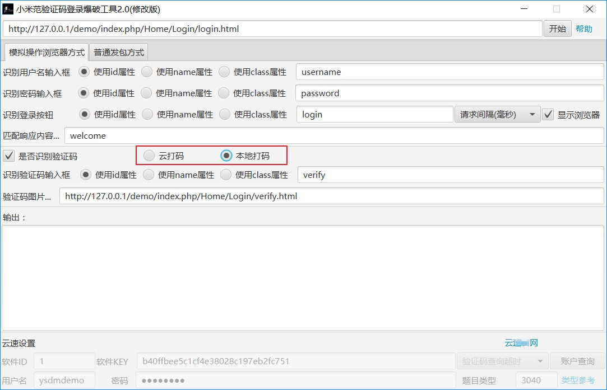<br>类似工具很多，看使用习惯。</li>
<li>高模糊度验证码识别<br>a)    一般的识别流程都是二值化、去干扰、区域选择、OCR识别<br>b)    可用云打码平台 （不打广告）</li>
</ol>
<h1><span id="0x05-短信邮箱验证码爆破">0x05 短信/邮箱验证码爆破</span></h1><ol>
<li>部分登录验证码的分类也可适用于此</li>
<li>验证码的本身绕过<br>a)    返回包回显（包括返回包、输出在cookie等）<br>b)    JS控制<br>c)    返回包控制：True&amp;false控制（0&amp;1），修改返回包可绕过</li>
<li>4位数字，验证码爆破，很快</li>
<li>6位数字，验证码爆破；可根据多线程的前提进行多进程处理，0-199999一波；200000-399999一波…（依次类推）；也可以看频率，哪块区间分布的概率较高可重点关注；也可以指定前一位或两位进行爆破。</li>
<li>弱token<br>a)    例：奇虎360任意用户密码修改漏洞，发送给邮箱的验证链接里面的vc值为时间戳的md5加密；作为一种检验参数可被猜测。<br>b)    基于密码找回的手机号、UID、邮箱等遍历，结合客户端源码可能的些蛛丝马迹<br>c)    不完全属于爆破逻辑，但可互补增值，参考<br><a href="http://bobao.360.cn/learning/detail/287.html" target="_blank" rel="noopener">http://bobao.360.cn/learning/detail/287.html</a></li>
</ol>
<h1><span id="0x06-数据信息爆破遍历">0x06 数据信息爆破（遍历）</span></h1><ol>
<li>关键参数的的信息遍历(select)<br>a)    包括用户名<br>b)    ID号<br>c)    手机号<br>d)    邮箱<br>e)    身份证号<br>f)    订单号<br>g)    银行卡<br>h)    信用卡(e.g 携程乌云漏洞)<br>  i.    PAN+信用卡到期时间（即：最小的身份验证模块）；<br>  ii.    PAN+信用卡到期时间+CVV；<br>  iii.    PAN+信用卡到期时间+CVV+持卡人地址；<br>  iv.    From <a href="http://t.cn/Rfrsdki" target="_blank" rel="noopener">http://t.cn/Rfrsdki</a><br>  i)    …</li>
<li>批量注册(insert)<br>a)    逻辑不严谨或校验不严格，实现多帐号的薅羊毛</li>
<li>一套组合拳（也可关联到爬虫）：<br>a)    两个常见的功能：密码找回、网站论坛<br>b)    切入点一：从密码找回功能分析，有相当一部分网站，提供账号检测功能，且提示存在与否，根据友情提示以及次数限定情况，可以通过返回包匹配存在的帐号，包括用户名、甚至手机号（其实主要是手机号）。<br>c)    切入点二：密码找回功能，输入手机号后会提示…正在找回XXX的密码信息…，这个就是用户名，（若输入用户名，有可能提示正在找回某手机号的密码信息（部分打码））<br>d)    切入点三：网站论坛，为了交流，以及用户的活跃度，部分网站存在bbs、club等论坛信息，一般二次开发的Discuz 。 上面会存在关于个人的一些数据，比如用户名（论坛网名）、性别、粉丝情况、帖子情况、联系方式、住址（部分需要登录权限）、还有一些倾向数据，比如购物平台关注的商品；<br>e)    从这三个切入点来讲，单独哪个可能都影响不足够大，没有达到影响的最大化。从一个数据利用者角度分析，最希望得到与平台性质相关的属性，比如交友网站的性别和联系方式信息，房产网站的倾向房产和联系方式等属性。 那把三个切入点的数据整合起来能得到什么呢？<br>  i.    通过用户检测 获得手机号用户个人信息；<br>  ii.    通过手机号检测，获得用户名信息；<br>  iii.    通过论坛遍历，获得ID和用户名信息；<br>  iv.    通过关联以上数据，可以对应手机号——&gt;用户名 ——&gt;  论坛ID，同样也就意味着获得了某手机号的用户关注了什么的信息。Demo 说明<br>  用户：188xxxx8888  用户名：HelloWorld  关注：某别墅<br>  用户：138xxxx9999  用户名：52BMW    关注：宝马X6<br>  用户：159xxxx6666  用户名：HelloKitty   就职某金融企业<br>  用户：186xxxx5555  用户名：独孤求败   购买了大疆无人机</li>
</ol>
<p>针对Demo数据，从一个数据威胁角度来分析，那可以实现精准营销。带来的场景就是另一片天地。<br>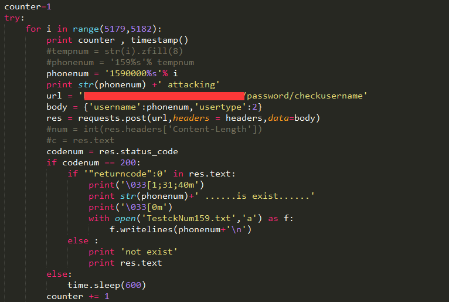</p>
<h1><span id="0x07-爆破关联">0x07 爆破关联</span></h1><ol>
<li>数据重放-短信炸弹<br>a)    无任何限制的短信炸弹<br>b)    单独手机号存在短信阈值限制，有可能通过间隔符绕过，18888888888,,,与18888888888效果一样；<br>c)    针对单独手机号有阈值限制，但可随意轮询其他手机号，同样有危害<br>d)    会导致短信网关的资源浪费和流失</li>
<li>数据重放-邮箱炸弹<br>a)    相对短信炸弹成本较低，但其逻辑同短信炸弹</li>
<li>子域名爆破<br>a)    根据自己平台和习惯选择即可：subDomainsBrute、Layer、FuzzDomain</li>
<li>子目录、弱文件爆破<br>a)    弱文件爆破，对比过老御剑、weakfilescan、dirfuzz、cansian.py 仍然觉得一款基于python3的dirsearch 值得拥有（可自定义字典）<br><a href="https://github.com/maurosoria/dirsearch" target="_blank" rel="noopener">https://github.com/maurosoria/dirsearch</a><br>b)    也可以自己写，就是基本的web请求，以及返回包的长度或特征匹配。<br>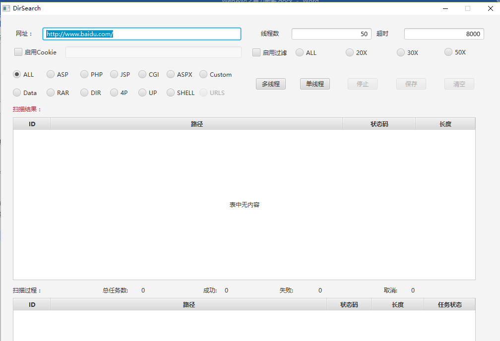</li>
<li>Fuzzing 测试<br>a)    SQL、XSS<br>b)    拒绝服务漏洞，例如SPIKE对表单测试特殊字符的异常处理</li>
</ol>
<h1><span id="0x08-协议口令爆破">0x08 协议口令爆破</span></h1><ol>
<li>SSH RDP FTP MySQL MSSQL …<br>a)    Fenghuangscan值得推荐，Hydra （Kali自带）值得拥有；<br>b)    Nmap 也可完成部分破解工作，本身是一个基础工具，但script下的脚本能让你做出不基础的事情<br>c)    毕竟直接拿到远控权限事半功倍，可直接获取数据，对于测试来讲还可获取源码，以半审计的方法进行挖掘。<br>d)    且有人以此为生（全网抓鸡）</li>
<li>SMTP、VPN协议类<br>a)    第一点提到的一些协议，初具成熟均不公开于互联网（当然意识和测试情况也有），但SMTP 和 VPN 类，大部分都有，也是入侵的概率很大的入口点<br>i.    brut3k1t（github有）<br>ii.    也有自定义的PY脚本<br>iii.    小技巧点：部分对同一用户有密码失败次数限制，可把循环颠倒过来，用同密码刷一遍用户，在用下一个口令刷一遍用户…<br>b)    翻到邮箱，根据信息检索，信息很精准，很有可能获得认证信息<br>c)    获得VPN认证，在内网搞事，一不小心就干掉了一个大家伙。</li>
<li>特殊服务类未授权访问或者弱认证<br>a)    Redis未授权访问<br>b)    Jenkins未授权访问<br>c)    MongoDB未授权访问<br>d)    ZooKeeper未授权访问<br>e)    Elasticsearch未授权访问<br>f)    Memcache未授权访问<br>g)    Hadoop未授权访问<br>h)    CouchDB未授权访问<br>i)    Docker未授权访问<br>j)    毕竟这些未授权可以直接getshell或直接获得数据<br>详细介绍利用及加固请参考<a href="https://www.secpulse.com/archives/61101.html" target="_blank" rel="noopener">https://www.secpulse.com/archives/61101.html</a></li>
</ol>
<h1><span id="0x09-攻击防御">0x09 攻击防御</span></h1><ol>
<li>登录界面暴力破解，哪些加固方法？<br>a)    阈值的设立<br>i.    单位时间内超过额定请求次数，封帐号&amp;封IP段时间<br>ii.    支持逆向思路<br>b)    密码输入错误次数达到3次后增设验证码<br>i.    验证码自身的安全性参考下一个问题<br>c)    自身应用系统的健壮性<br>i.    强制要求用户注册时满足口令复杂度要求<br>ii.    定期检索数据库弱口令帐号的存在，可比对top500的密文值</li>
<li>图形验证码自身常见的加固方法？<br>1)    字体扭曲<br>2)    字体粘连<br>3)    字体镂空<br>4)    字体混用<br>5)    主体干扰线<br>6)    背景色干扰<br>7)    背景字母干扰<br>8)    公式验证码<br>9)    加减法验证码<br>10)    逻辑验证码</li>
<li>安全登录流程设计？<br>a)    系统设置一个固定的盐值，该盐值最好足够复杂，<br>b)    用户注册、修改密码时，将用户的原始密码与我们的固定盐值拼接，然后做md5运算。<br>c)    传递至后端，保存进数据库（数据库中保存的密码是用户的原始密码拼接固定盐值后，md5运算后的结果）。<br>d)    登录时，将用户的原始密码与我们的固定盐值进行拼接，然后做md5运算，运算后的结果再拼接上我们的随机码，再次md5运算，然后提交。<br>e)    后端接收到登录请求后，将从数据库中查询出的密码与session中的随机码拼接后，md5运算，然后与前端传递的结果进行比较。<br>PS:这种登录流程对于数据包重放来讲的确有效，但对于正常的selenium浏览器输入爆破仍需要结合阈值和验证码来防御。</li>
<li>Modsecurity类防御暴力破解类？<br>a)    若代码变更成本大，可以使用Modsecurity （当然直接买硬WAF也可以）<br>b)    <a href="https://www.trustwave.com/Resources/SpiderLabs-Blog/Defending-WordPress-Logins-from-Brute-Force-Attacks/（Freebuf有翻译）" target="_blank" rel="noopener">https://www.trustwave.com/Resources/SpiderLabs-Blog/Defending-WordPress-Logins-from-Brute-Force-Attacks/（Freebuf有翻译）</a><br>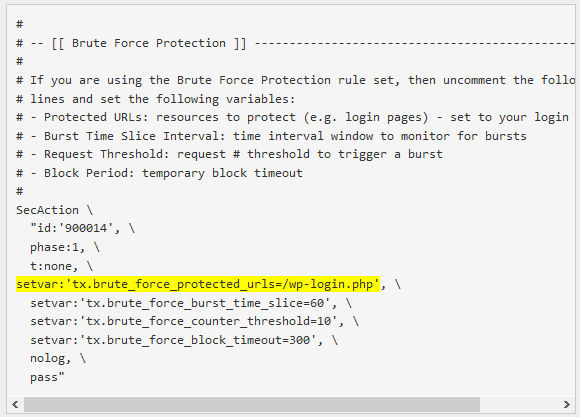</li>
<li>针对验证码可多次重用的加固方法？<br>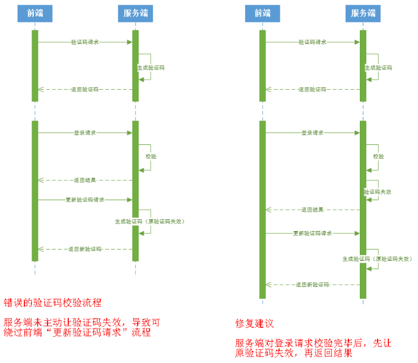</li>
<li>主机类暴力破解的防御方法？<br>a)    自身的帐号口令体系满足复杂度要求<br>b)    若非必须的服务，直接禁止对外的开放，包括22、3389<br>c)    限定指定IP访问（网络的访问控制）<br>d)    不使用口令方式，使用私钥类登录<br>e)    意识类：不在标签写密码；运维管理类也不直接统记录到一个txt</li>
</ol>

      
    </div>
    
  </div>
  
    
<nav id="article-nav">
  
    <a href="/2018/05/01/接口安全道亦有道/" id="article-nav-newer" class="article-nav-link-wrap">
      <strong class="article-nav-caption">&lt;</strong>
      <div class="article-nav-title">
        
          接口安全道亦有道
        
      </div>
    </a>
  
  
    <a href="/2017/11/27/基于Seleinum的口令爆破应用/" id="article-nav-older" class="article-nav-link-wrap">
      <div class="article-nav-title">基于Seleinum的口令爆破应用</div>
      <strong class="article-nav-caption">&gt;</strong>
    </a>
  
</nav>

  
</article>


</div>
      <footer id="footer">
  <div class="outer">
    <div id="footer-info">
      <div class="footer-left">
        &copy; 2023 sm0nk
      </div>
        <div class="footer-right">
          <a href="http://hexo.io/" target="_blank">Hexo</a>  Theme <a href="https://github.com/smackgg/hexo-theme-smackdown" target="_blank">Smackdown</a>
        </div>
    </div>
  </div>
</footer>
    </div>
    
  <link rel="stylesheet" href="/fancybox/jquery.fancybox.css">


<script>
	var yiliaConfig = {
		fancybox: true,
		mathjax: true,
		animate: true,
		isHome: false,
		isPost: true,
		isArchive: false,
		isTag: false,
		isCategory: false,
		open_in_new: true
	}
</script>
<script src="/js/main.js"></script>


<script type="text/x-mathjax-config">
MathJax.Hub.Config({
    tex2jax: {
        inlineMath: [ ['$','$'], ["\\(","\\)"]  ],
        processEscapes: true,
        skipTags: ['script', 'noscript', 'style', 'textarea', 'pre', 'code']
    }
});

MathJax.Hub.Queue(function() {
    var all = MathJax.Hub.getAllJax(), i;
    for(i=0; i < all.length; i += 1) {
        all[i].SourceElement().parentNode.className += ' has-jax';                 
    }       
});
</script>

<script src="//cdn.bootcss.com/mathjax/2.7.0/MathJax.js"></script>


  </div>
</body>
</html>